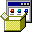

Adelante
Adelante Recargar
Recargar Sobre mí
Sobre mí
Actividad 2
Esta actividad estará disponible próximamente en el semestre 2026.
 Mi PC | Zona de Intranet local
Mi PC | Zona de Intranet local Mi PC
Mi PC
 Actividades
Actividades
 Reporte Prompts.pdf
Reporte Prompts.pdf
 Sobre mí
Adelante Recargar Sobre mí
Sobre mí
Adelante Recargar Sobre mí
Esta actividad estará disponible próximamente en el semestre 2026.
Mi PC | Zona de Intranet local

 Mi PC
Mis Documentos
Mi PC
Mis Documentos

Panel de Control
Ayuda y Soporte